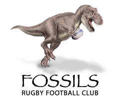
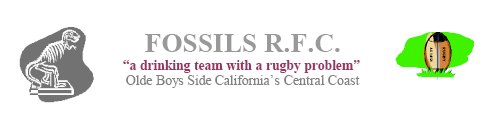
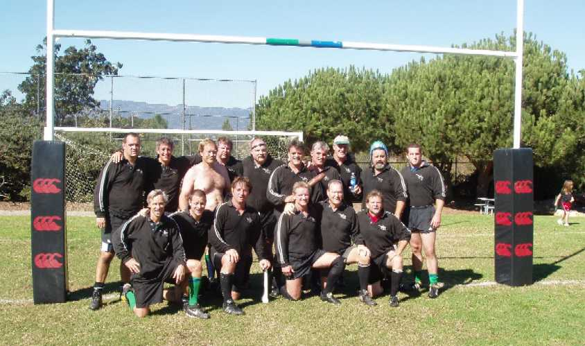
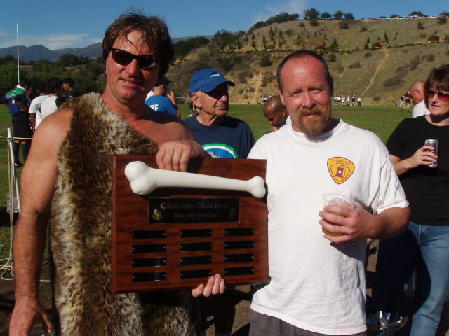
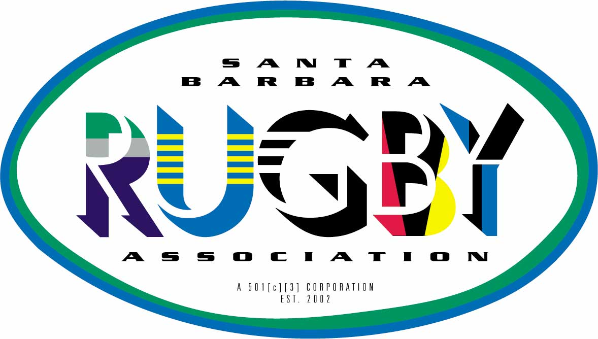

THE CENTRAL COAST FOSSILS IS A rejuvinated OLDE BOYS SIDE THAT WAS ORIGINALLY FOUNDED IN 1978.
Check latest update on the menu on the left!!!

We are in the process of scheduling games to be played at our home pitch at Elings Park in Santa Barbara in conjunction with the Santa Barbara Grunions. We have excellent match facilities that include BBQ, rugby pro shop, beer garden and family play ground for kids.
We will play either “O 35” or “O 40” sides that are looking for a friendly. Our club now has an active member ship of 45 players that reside from San Luis Obispo to the San Fernando Valley.
For further info. you can call Bob Schwartz or e mail us at grunionrugby@gmail.com


MEMBER OF

a 501[c][3] Corporation